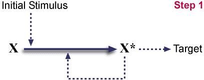
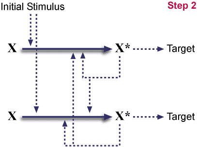
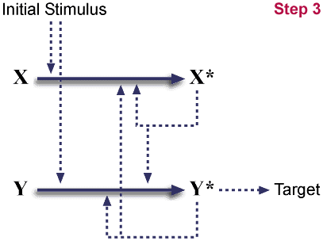
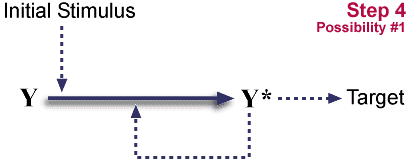
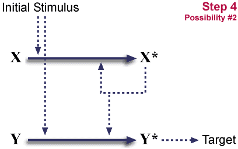
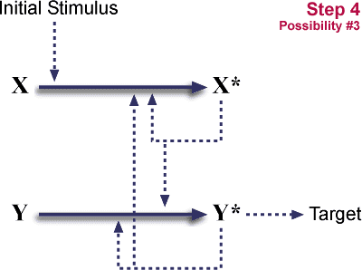

Darwin's Black Box
Irreducible Complexity or Irreproducible Irreducibility?
Copyright © 1996-1997 by
Keith Robison
[Last Update: December 11, 1996]

Introduction
Other Links:
|
In his book Darwin's Black Box (The Free Press, 1996), biochemist Michael Behe claims that many biological systems are "irreducibly complex", that in order to evolve, multiple systems would have to arise simultaneously. He claims that such systems exist in biology and that the existence of "irreducible complexity" argues for an intelligent designer. Behe describes in detail several biochemial systems and alludes to others, claiming that they are "irreducibly complex."
Most science books for popular audiences focus on the frontiers of knowledge: what do we know, what does it suggest, and where is it likely to take us. In contrast, I would characterize Behe's book as an exposition of the Frontiers of Ignorance: what do we not know, and how can we blind ourselves with that lack of knowledge.
Indeed, that is the whole thesis of Behe's book. A system is labeled "irreducibly complex" if he cannot postulate a workable simpler form for the system. There is no way to prove such a claim. All we can do is look at the facts and logic presented, and judge whether it makes sense. Whether the logic is correct is another matter entirely. Indeed, this series of postings is intended to illuminate specific examples of where such reasoning is wrong. And it is often wrong because Behe has failed to present the full picture; we are not shown crucial facts which point out the failings in the logic.
Behe starts with the example of a mousetrap; he claims that a standard mousetrap is "irreducibly complex". Such a mousetrap consists of (p.42):
(1) a flat wooden platform to act as a base(2) a metal hammer, which does the actual job of crushing the little mouse
(3) a spring with extended ends to press against the platform and the hammer when the trap is charged
(4) a sensitive catch that releases when slight pressure is applied
(5) a metal bar that connects to the catch and holds the hammer back when the trap is charged (there are also assorted staples to hold the system together)
Behe then continues with his logic as to why this system is "irreducibly complex":
Which part could be missing and still allow you to catch a mouse? If the wooden base were gone, there would be no platform for attaching the other components. If the hammer were gone, the mouse could dance all night on the platform without becoming pinned to the wooden base. If there were no spring, the hammer and platform would jangle loosely, and again the rodent would be unimpeded. If there were no catch or metal holding bar, then the spring would snap the hammer shut as soon as you let go of it...
Suppose you challenge me to show that a standard mousetrap is not irreducibly complex. You hand me all of the parts listed above. I am to set up a functional mousetrap which at least mostly resembles the standard one, except I hand you back one piece. Can it be done?
Yep. The wooden base can be discarded. Where do you put a mousetrap? On the floor. What if I assemble the mousetrap by pounding the staples into the floor? Would I have a fully functional mousetrap?
Of course I would. Would it be just as useful? Nope -- there is actually a selective advantage to having a typical mousetrap, rather than a kit. Not only do I have to assemble the mousetrap, but I can't put it on a stone or concrete floor, or a very irregular floor or a very soft one (such as soil). It's a nuisance to put behind or under appliances & furniture. I can kiss my security deposit goodbye.
Clearly it is inferior. But just as clearly, it is functional!
This neatly illustrates the problem of "irreducible complexity". It is simply a claim. Only as good as the logic and facts used to generate the claim.
When the above was posted to talk.origins, Behe replied
That's an interesting reply, but you've just substituted another wooden base for the one you were given. The trap still can't function without a base.
Which completely misses the point. The base-free mousetrap still functions; it simply uses a component of its natural environment in its workings.
Behe goes on to say:
Furthermore, you were essentially given a disassembled mousetrap, which you then assembled. All of the parts were preadapted to each other by an intelligent agent. The point that has to be addressed is, how do you start with *no* pieces (at least none specifically designed to be part of a mousetrap), and proceed to a functioning, irreducibly complex trap.
Which exposes a general problem with "irreducible complexity" -- it is a "God of the Gaps" explanation. Each time we show that a supposedly "irreducibly complex" system is not, by removing one part, a supporter can claim that our new system is now "irreducibly complex". Any similarity to Zeno's Paradox is surely accidental.
Pseudogenes
One argument against an intelligent designer is the amazing amount of flotsam and jetsam in genomes. The human genome is 90-95% apparent junk, useless sequences, many of which resemble functional genes, but are clearly beaten up beyond working order (pseudogenes). In attempting to rebut a passage by a Dr. Ken Miller on pseudogenes, Behe claims (p.226):
The second reason why Miller's argument fails to persuade is that even if pseudogenes have no function, evolution has "explained" nothing about how pseudogenes arose. In order to make evan a pseudocopy of a gene, a dozen sophisticated proteins are required: to pry apart the two DNA strands, to align the copying machinery at the right place, to stitch the nucleotides together into a string, to insert the pseudocopy back into the DNA, and much more. In his article Miller has not told us how any of these functions might have arisen in a Darwinian step-by-step process, nor has he pointed to articles in the scientific literature where we can find the information. He can't do that, because the information is nowhere to be found.
The fact of the matter is, the answer can be found in almost any genetics textbook. There are two major mechanisms for producing such duplications in biology, and both have been demonstrated experimentally.
Behe is apparently completely ignorant of the enormous amount of literature on tandem duplication, in which one copy of a gene spawns multiple copies. A common mechanism is unequal crossing over, due to the recombinational machinery misaligning two chromosomes. These can be shown to occur in the lab.
For example, in the fruit fly Drosophila, mutants exist called Bar and Ultrabar. In flies mutant for the Bar gene, the normally spheroid eye is much smaller and pronouncedly oblong (hence the name); in flies mutant for Ultrabar, this narrowing is even greater. If you keep pure-breeding stocks of either mutant around, examples of the other mutant will emerge at low frequency. In other words, pure-bred Bar stocks will occasionally turn up an Ultrabar fly, and pure Ultrabar stocks will occassionally turn up a Bar mutant. In Bar mutants, one section of a chromosome repeats itself, a tandem duplication. In Ultrabar flies, even more copies of the repeat are present. The generation of tandem duplications (Bar mutating to Ultrabar) and their reduction into fewer repeats (Ultrabar mutating to Bar) is an inevitable consequence of the recombinational machinery of the cell.
The second mechanism is reverse transcription + integration. In this case, the mRNA for a gene is reverse transcribed into a DNA segment, which then integrates into the genome. Reverse transcriptase is readily available, due to the many retrotransposons and defective retroviruses in our cells. The integration step can occur by homologous recombination or by other random processes. DNA segments injected into cells will integrate at a low frequency; many genetic engineering techniques rely on this. Many pseudogenes, and some functional ones, show the hallmarks of being produced in this manner -- they lack the introns of the inferred parent genes and show long runs of the nucleotide A after the gene (eukaryotic mRNAs end in long runs of A).
Hence we see that the available body of biological knowledge predicts that pseudogenes are an inevitable phenomenon -- given enough time. The complex machinery that Behe claims is necessary for pseudogene formation not only exists, but it exists for completely different purposes, in all living systems.
Evolution predicts that pseudogenes will be born, will decay or be deleted, and that common ancestors will often share common pseudogenes. Evolution also provides a means for distinguishing pseudogenes from real genes (by counting synonymous vs non-synonymous mutations).
Cascades
A running theme in much of molecular biology is genetic cascades, in which one gene triggers another gene, which triggers another. Two examples of cascades cited by Behe are the formation of blood clots and the complement system. The complement system is a set of proteins that are activated by antibodies; these proteins then create holes in the cell membranes of the invading bacteria and thereby disrupt the specific balance of solutes and ions required for the bacterium to live.
A major claim of Behe's is that biochemical cascades, in which one enzyme activates another, which activates a third (and so on), are "irreducibly complex". The claim is that without all the parts of the cascade, the cascade cannot function, and that therefore known evolutionary processes could not produce such a cascade by sequential addition of steps. p.87:
Because of the nature of a cascade, a new protein would immediately have to be regulated. From the beginning, a new step in the cascade would require both a proenzyme and also an activating enzyme to switch on the proenzyme at the correct time and place. Since each step necessarily requires several parts, not only is the entire blood-clotting system irreducibly complex, but so is each step in the pathway.
We can easily see that this broad statement is false; it is possible to posit such an evolutionary process. Furthermore, we can go from such a process to the expected results of such a process, and thereby make predictions as to what might be found in the living world.
Indeed, the hint of a mechanism can be found in Behe. Obviously, the cascade must have a start, so how does it start? p.83:
... it seems there is always a trace of thrombin in the bloodstream. Blood clotting is therefore auto-catalytic, because proteins in the cascade accelerate the production of more of the same proteins.
Starting pathway.
X<---X* has been omitted from diagram. This
is hypothesized to be either spontaneous or catalyzed by X*.
(Both cases are known to exist). A stimulus triggers the conversion
of X to X*, and X*
autocatalytically drives this conversion also.
X* then acts on a target.

Post gene duplication.
This is a completely symmetric system. (The
diagram is not, but could be rearranged into one.) This arrangement
is neutral; the species has gained no advantage. On the other hand,
duplications such as this are a common event.

Mutation eliminates X*'s ability to interact with target.
The duplicate is now labeled Y/Y* for clarity. Again, this
genotype is neutral; it is neither beneficial nor detrimental. Once a
duplication occurs, mutations partially inactivating one copy will be
common. (Mutations completely inactivating one copy will also be
common, restoring the system to its initial state.)

Multiple mutational outcomes are now possible:
- X is inactivated by mutation.
System returns to start.
- Y* catalytic activity for X->X* and
Y->Y* conversions is lost.
System is now dependent on X and Y. (Stimulus alone is not sufficient for useful activation.) It has become "irreducibly complex."
- Y's ability to respond to stimulus is lost.
System is now dependent on X and Y. It has become "irreducibly complex."
So, duplication plus a loss of function, plus one of two different loss-of-function mutations can convert a single step pathway into a two step cascade. The initial steps are neutral, neither advantageous nor disadvantageous. Such neutral mutations occur regularly. The final step locks in the cascade. It is potentially advantageous, because multiple levels of cascade give opportunities for both control (probably a long-term advantage) and for amplification. (One X* can activate many Y's, increasing an initial signal.)
It should be obvious that either the target or stimulus could be another such pathway, and so this mechanism could expand the number of layers in a cascade. And, both outcomes retained a degree of autocatalysis, again leaving opportunity for more cycles of layer expansion. So much for "irreducible complexity".
This is, of course, a model. A model should make predictions, and this model does. If a pathway evolved by such a manner, then consecutive steps in the pathway should be catalyzed by homologous proteins (a characteristic of both the blood coagulation and complement cascades, two examples given by Behe). If the proteins are encoded by adjacent genes (tandem duplication) or one gene shows the hallmarks of reverse transcription (no introns and a poly-A tail in the genomic sequence), all the better. We would also expect to find systems in nature with fewer or greater levels of cascading.
Is this the case with either the complement system or the clotting cascade? I'll confess I do not know for sure. Many of the proteins of both these systems fulfill the similar sequence criterion, though this is a weak test. The much stronger test, and major violation of the "irreducible complexity" postulate, would be to find varying cascade systems in the living world. If, for example, I found a system with one less level than human, that would already show that the human system is not "irreducibly complex", violating Behe's claim that "not only is the entire blood-clotting system irreducibly complex, but so is each step in the pathway." Again, it's not my speciality, and I am unaware. Indeed, it is quite possible that it remains an unexplored area. Does the clotting system function in the same manner in fishes? In Agnatha (jawless fishes such as hagfish and lampreys)? In lancets (invertebrates thought to be representative of the ancestors of vertebrates)? Behe's silence on these points, the fact he did not even consider such an opposing model, or worse, that he never considered the predictions of his own model, does not bode well. Indeed, it is the critical examination of one's own model which separates cargo cults from science.
The Krebs Cycle
The Krebs cycle (also known as the tricarboxylic acid cycle, also known as the citric acid cycle) is a key piece of metabolism. Almost any serious biology class at least touches on it, and it is often analyzed in great detail in a biochemistry class. (I once had to memorize the beastie.)
The Krebs is a multifunctional center of metabolism -- the second stage in the metabolism of glucose, useful in burning other fuels, useful as a source of various carbon units, etc. Nine different enzymes drive the Krebs. At first glance, this would appear to be the keystone of the cell, the linchpin, "irreducibly complex". Remove any enzyme, and you obviously no longer have a cycle. Kablooie!
Unfortunately, Behe doesn't mention the Krebs in his book. A pity. Here is a complex biochemical system, clearly an excellent hook on which to hang his thesis. Right?
However, closer inspection of the literature reveals problems with such a "Krebs cycle is irreducibly complex" hypothesis. In some systems, a pathway called the glyoxylate shunt exists, which consists of a shortcut across the cycle. Other variant pathways exist. So, rather than being a minimal design fixed in stone, the Krebs is one of several alternatives. Furthermore, some species get by without a complete Krebs cycle. For example, determination of the complete DNA sequence of the bacterium Haemophilus influenzae confirmed that it is completely missing genes for several steps in the Krebs cycle.
This leads to a question: if the Krebs cycle, in all its complexity, is not "irreducibly complex", how can we have any confidence in our ability to recognize an "irreducibly complex" system? After all, that is the only criterion we have to recognize one: that we cannot postulate a reasonable evolutionary pathway.
One of Behe's claims is that scientific papers detailing plausible Darwinian models for the evolution of complex biochemical systems are nonexistent. p.179:
There has never been a meeting, or a book, or a paper on details of the evolution of complex biochemical systems.
I hope he corrects this in his next book/edition, since it is so clearly false.
Almost simultaneously with the publishing of "Darwin's Black Box", came the following paper:
The puzzle of the Krebs citric acid cycle: Assembling the pieces of chemically feasible reactions, and opportunism in the design of metabolic pathways during evolution.
Journal of Molecular Evolution, Sep 1996, 43: 293-303
Melendez-Hevia, Waddell & Cascante
These authors take up exactly the problem which Behe claims is ignored: how could a complex biochemical pathway evolve by a step-wise Darwinian process, with each intermediate pathway providing selective advantage.
What is worse for Behe, though, is that looking through the bibliography for this paper reveals multiple citations for similar analyses of other biochemical pathways. For example, some of the same authors have four papers on the evolution of the pentose phosphate pathway, dated 1985, 1988, 1990, and 1994, and a paper on glycogen biosynthesis from 1993. They cite other analyses of Krebs cycle evolution from 1981 (x2), 1985, 1987 (x2), 1992, as well as two books on the general subject of metabolic evolution from 1992.
Behe's literature search, which supposedly found nothing, covered up to 1994.
Emboldened by this, I did a quick Entrez search for papers on the evolution of amino acid biosynthesis (drawing on a weak memory). Sure enough, it was no problem to find a host of citations, including:
- Orig Life Evol Biosph 18: 41-57 (1988)[88217276]. New prospects for deducing the evolutionary history of metabolic pathways in prokaryotes: aromatic biosynthesis as a case-in-point. S. Ahmad & R. A. Jensen
- Mol Biol Evol 2: 92-108 (1985)[88216112]. Biochemical pathways in prokaryotes can be traced backward through evolutionary time. R. A. Jensen
- Microbiol Sci 4: 258, 260-2 (1987)[91058939]. Enzyme specialization during the evolution of amino acid biosynthetic pathways. C. Parsot, I. Saint-Girons & G. N. Cohen
- Annu Rev Microbiol 30: 409-25 (1976)[77043263]. Enzyme recruitment in evolution of new function. R. A. Jensen
- Proc Natl Acad Sci U S A 76: 3996-4000 (1979)[80035004]. Origins of metabolic diversity: evolutionary divergence by sequence repetition. L. N. Ornston & W. K. Yeh
We are also left with a conclusion: if Behe were to publish his literature search in a journal, there is only one appropriate journal: The Annals of Irreproducible Results.
What Good is An Antibody?
Behe spends a whole chapter (Chapter 6), describing portions of the immune system. After going through a section describing the production of antibodies, which he claims is an "irreducibly complex" process and therefore could not be the product of evolution, he makes a very interesting statement. p.131-132:
Antibodies are like toy darts: they harm no one. Like a "Condemned" sign posted on an old house or an orange "X" painted on a tree to be removed, antibodies are only signals to other systems to destroy the marked object.
Behe then goes on to describe the complement system. And nothing else. Leaving us with the impression that antibodies and complement, each supposedly "irreducibly complex," require each other for function.
The biological reality is quite different. Antibodies can function on their own. They can function in the absence of complement. Indeed, thousands of young children scream out each year because Behe is wrong.
Antibodies bind to other molecules. Suppose you have a poison. The poison acts by binding to a molecule in the human body using a very specific mechanism. Particular atoms on the poison must interact with particular atoms on the target molecule. If the antibody binds to, and covers those atoms on the poison, then the poison will not function. This is precisely how the DPT vaccine works -- it provokes the production of antibodies which will bind to and neutralize the relevant toxins.
In a related fashion, many viruses depend on certain molecular flexibility in order to infect a cell, and have little molecular hinges for this purpose. If an antibody can fit into such a hinge and jam it, the virus cannot function, just as a door can be jammed shut by ramming a wedge between the door and the doorframe.
There is a second way that antibodies can, in themselves, be much more than a "toy dart" and certainly more than a marker. Antibodies are symmetric; they are composed of two identical halves, each of which can bind a target. Hence, antibodies can act as matchmakers, bringing together two foreign bodies so that they are concentrated and are a larger target. If the target for the antibody is repeated on the invader, such as the repeating structure of a virus or an abundant protein on a bacterium, then antibodies can make very efficient matchmakers. So efficient that their targets precipitate out of solution.
I said each antibody has two identical halves able to bind to two targets. That isn't quite accurate. One variety of antibody, IgM, is composed of 5 such molecules, giving it the ability to bind to as many as 10 molecules. Alternatively, this arrangement can give IgM a better reach, linking together two targets buried in valleys.
Once invaders have been clumped in such a manner, they are much easier targets for macrophages, another line of defense, and one that could potentially function in the absence of antibodies.
What of the antibodies themselves? How did they originate?
It is, I believe, still an unsolved question. But again, Behe has left out all the interesting hints. And there are certainly interesting ones out there, hints which undermine Behe's claims.
For example, Behe makes a number of claims about the system which produces antibodies in mammals and how these systems are irreproducibly complex (Chapter 6; especially p.130-131). Among the key claims are:
- The system is tuned to produce hundreds of thousands of distinct antibodies, each with a distinct specificity. A system which produced only a few (or just one) would be useless.
- The system could not function without the complex biochemical machinery which splices together antibody genes. In turn, this complex machine has no function in the absence of antibody genes.
In the November 1996 issue of Scientific American there are two papers on the evolution of the immune system. Interestingly, these papers provide evidence which refutes both of Behe's claims.
First, some moths produce a protein called hemolin, which binds (in an apparently generic manner) to bacteria and assists in removing the bacteria from the hemolymph (the blood-like substance in insects). The protein sequence of hemolin reveals it to be a relative of vertebrate antibodies. So much for the hypothesis that a single antibody is not useful.
The second article describes the antibody genes of sharks. In humans, an antibody gene is assembled by mixing-and-matching various DNA segments, which are all found lined up on a chromosome. In individual immune system cells, antibody genes are assembled according to the following schematic:
| Genome: | V1-V2-V3-V4-D1-D2-D3-J1-J2-J3-C |
| Possible Antibodies: | V1-D3-J1-C |
C is a region Constant between antibodies, whereas the V, D, and J segments (Variable, Diversity, and Joining) are each drawn from large pools of segments.
In sharks, however, the arrangement in the genome is:
| V5-D5-J5-C | V6-D6-J6-C | V7-D7-J7-C |
(Note: the numbers are just used as markers; they don't signify anything else).
That is, in sharks the genes are already assembled, and these genes are arranged in long strings of such assembled genes (tandem arrays). Molecular genetic processes which can generate such tandem arrays are well-known. Also note that these same processes could take the shark arrangement and generate:
| V5-V6-D6-J6-C | V7-D7-J7-C |
by a single step -- which looks a little like the human case. Further such deletions, especially working in conjunction with re-expansions by tandem duplication, could easily generate the arrangement seen in humans. Of course, this arrangement is not useful without the splicing machinery, but the shark example clearly disproves Behe's claim that antibody diversity requires the splicing machinery.
There are more hints to possible evolutionary origins to the fascinating system but are absent from Behe's book. For example, the molecular structure of antibodies is related to the molecular structure of many other molecules, including other molecules involved in immune recognition (T-cell receptors) as well as molecules involved in cell-to-cell recognition. Indeed, there is a remaining mystery as to why recombination machinery which constructs antibodies is apparently active in several non-immune cell types, including large regions of the brain. Did antibodies evolve from cell-to-cell recognition molecules? We don't know, but it is intriguing.
What features of the mammalian immune system are missing in other vertebrates? We see already that the shark immune system is laid out on a similar, but distinctly different plan. What sort of immune system do non-vertebrate chordates possess? I don't know offhand, but it probably tells us something interesting about immune system function. Any missing parts would certainly undermine claims of "irreducible complexity".
[Return to the Irreducible Complexity FAQs]